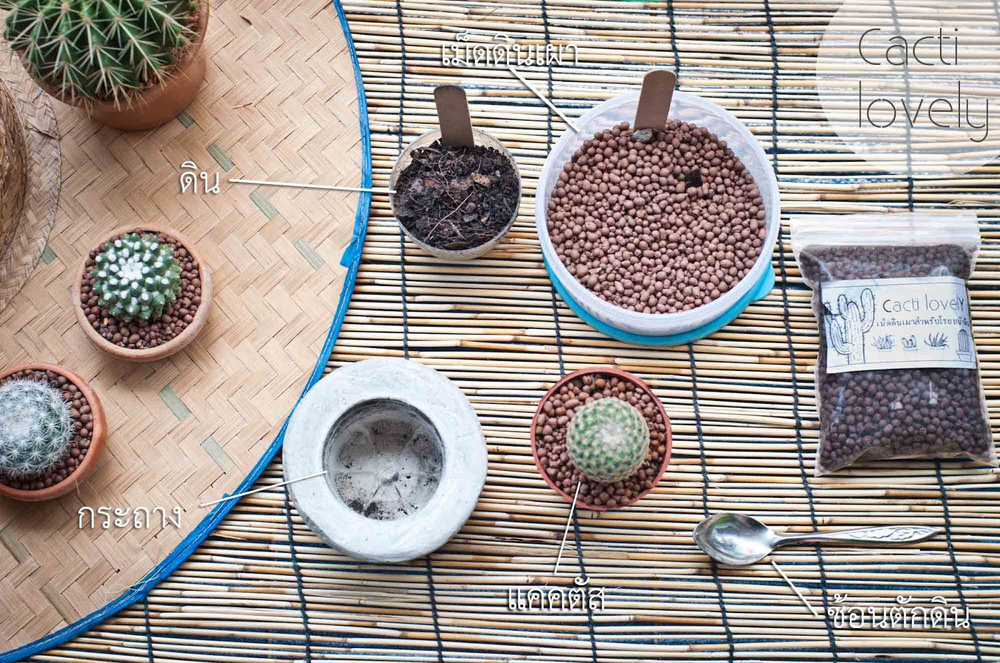

การปลูกหรือการย้ายกระถาง
คนเราก็ต้องโตขึ้น เช่นเดียวกับแคคตัส เราจึงต้องรู้วิธีย้ายบ้านใหม่ให้กับแคคตัส
Credit: Cacti lovely-Website
การเปลี่ยนกระถางก็เปรียบเสมือนการย้ายบ้านใหม่สำหรับแคคตัส บ้านที่โตขึ้น หรืออาจจะเป็นบ้านที่มีความอุดมสมบูรณ์มากยิ่งขึ้น เพราะแคคตัสมีการเจริญเติบโตขึ้น ทำให้ลำต้นใหญ่ขึ้น รากเยอะขึ้น ดินก็จะเริ่มแข็ง เราจึงจำเป็นต้องเปลี่ยนกระถางอย่างสม่ำเสมอ
Credit: ปวรวรรณ สีนาคล้วน
1. แคคตัสที่เลี้ยงเอาไว้เป็นเวลานาน เริ่มโตคับกระถาง ทำให้รากอึดอัดเกินไป
2. แคคตัสอยู่ในสภาพดินที่ไม่ดี เช่น ชื้นแฉะ แข็ง รดน้ำแล้วแห้งช้า
3. แคคตัสติดโรค เช่น เพลี้ยแป้ง ราสนิม รากเน่า
4. พึ่งซื้อแคคตัสมาใหม่ ก็ควรย้ายกระถาง เพื่อให้แคคตัสสามารถปรับตัวให้เข้ากับสภาพแวดล้อมบ้านเราได้
5. ควรเปลี่ยนกระถางทุกๆปี เพราะดินจะถูกแคคตัสดูดเอาแร่ธาตุอาหารไปจนหมด
อุปกรณ์ในการย้ายกระถาง <

Credit: Cacti lovely-Website
1. ดินสําหรับปลูกแคคตัส
2. วัสดุโรยหน้าดิน เช่น หิน กรวด หรือดินญี่ปุ่น
3. วัสดุรองก้นกระถาง เช่น กาบมะพร้าวสับ ถ่าน หินภูเขาไฟ
4. ช้อน สำหรับตักดินและหิน
5. กรรไกร สำหรับตัดแต่งราก
6. พู่กัน
7. กระถาง
ดินสำหรับปลูกแคคตัส
ดินสำหรับปลูกแคคตัส หรือเครื่องปลูก สูตรดินไม่มีสูตรที่ตายตัว หรือดีที่สุด เพราะขึ้น อยู่กับสภาพแวดล้อม และแต่ละสายพันธุ์ของแคคตัส ลักษณะของดินแคคตัสที่ดีก็คือ ดินที่ สามารถปลูกได้ดีกับต้นชนิดนั้นๆในสถานที่นั้นๆ ส่วนประกอบหลักที่ต้องใส่ ได้แก่
1. ดิน เช่น ดินใบก้ามปู แกลบ ขุยมะพร้าว พีทมอสส์ หรือ มูลสัตว์ต่างๆ เพื่อเป็นแร่ธาตุให้แก่แคคตัส
2. วัตถุเพิ่มความโปร่งให้ดิน เช่น เพอร์ไลท หินภูเขาไฟ เวอร์มิคูไลท ทรายหยาบ เพื่อให้ดินมีความโปร่งมากขึ้น น้ำจะระบายได้ดี และทำให้ไม่เกิดรากเน่า
3. สารเคมีต่างๆ เช่น ปุ๋ยละลายช้า ยาฆ่าแมลงแบบเกร็ด ยาฆ่าเชื้อรา
วัสดุโรยหน้าดิน
การโรยหน้าดิน เพื่อกันความชื้นระเหยออกไปจากดิน และยังป้องกันดินกระเด็นมาโดนแคคตัสของเราเวลาที่เรารดน้ำอีกด้วย
• วัตถุโรยหน้าดินมีให้เลือกใช้หลายชนิด เช่น หิน กรวด หรือดินญี่ปุ่น เป็นต้น โดย หิน และกรวด มีหลายขนาด หลายสี สามารถเลือกได้ตามใจชอบ
• ดินญี่ปุ่น นิยมกันนำมาโรยหน้าดิน เพราะมีแร่ราตุสูง อีกทั้งยังสังเกตความชื้นในดินได้ง่ายอีกด้วย และสามารถนำไปผสมกับดินปลูก เพื่อเพิ่มแร่ธาตุในดินได้เช่นกัน แต่มีราคาค่อนข้างสูง
วัสดุรองก้นกระถาง
• กาบมะพร้าวสับ เป็นวัสดุที่อุ้มน้ำได้ดี เหมาะสำหรับแคคตัสที่ชอบความชื้นมากหน่อย
• ถ่าน เป็นวัสดุที่เหมาะแก่การน้ำมารองก้นกระถางแคคตัสมากที่สุด เพราะระบายน้ำได้ดี ก่อนจะนำรองก้นกระถาง ให้เขย่าเบาๆ เพื่อให้ฝุ่นผงของถ่านหลุดออกไปก่อน
• หินภูเขาไฟ อุ้มน้ำได้น้อยที่สุด และมีอายุการใช้งานได้ยาวนาน ที่สำคัญหินภูเขาไฟ มีแร่ธาตุที่พืชต้องการ
กระถาง
นอกจากกระถางจะเปรียบเสมือนที่อยู่ของพืชด้วยแล้ว กระถางยังมีผล ต่อการเจริญ เติบโตของแคคตัสด้วยเช่นกัน
• กระถางพลาสติก เป็นที่นิยมมาก เพราะมีราคาถูก หาซื้อได้ง่าย กักเก็บความชื้น ได้ดี มีน้ำหนักเบา แต่ข้อเสียคือไม่มีรูพรุน ทำให้อากาศไม่ถ่ายเท อาจทำให้รากแคคตัสเน่าได้ง่ายกว่ากระถางดินเผา
• กระถางดินเผา เป็นกระถางที่มีรูพรุน ถ่ายเทความชื้นได้ดีที่สุดทำให้รากแคคตัส ได้รับออกซิเจนเพียงพอ และเจริญเติบโตได้ดี แต่มีราคาสูง แตกหักง่าย และถ้าใช้ไปนานจะเกิด ตะใคร่ขึ้นรอบขอบกระถาง
• กระถางเซรามิก มีรูปทรง และลวดลายสวยงาม แต่การเคลือบทำให้อากาศไม่ถ่ายเท และมีราคาสูงกว่ากระถางอื่นๆ
ปุ๋ยปุ๋ย
• ปุ๋ยละลายช้า 0smocote เราจะใส่ทุกครั้งที่เปลี่ยนกระถาง โดยกะปริมาณให้เหมาะสมกับขนาดของต้น ถ้าต้นเล็ก ใส่ปุ๋ยประมาณ 2-3 เม็ดก็พอแล้ว ปุ๋ยจะสามารถให้สารอาหารได้เป็นเวลา 3 เดือน จากนั้น แร่ธาตุก็จะหมดไป และสลายไปเอง
• ปุ๋ยเกล็ด การรดน้ำแคคตัสด้วยปุ๋ยเกล็ด จะใช้สูตรเสมอที่มี N-P-K เท่ากัน โดยผสมน้ำให้เจือจางประมาณ 1 กรัม ต่อน้ำ 1 ลิตร รดสัปดาห์ละ 1 ครั้ง สัปดาห์ เว้นสัปดาห์
1. งดให้น้ำแคคตัส ประมาณ 2-3 วัน เพื่อให้ดินและรากแห้ง
2. นำแคคตัสออกจากกระถาง โดยใช้ตะเกียบค่อยๆดันที่รูระบายน้ำบริเวณนั้นกระถาง หรือค่อยๆบีบกระถางให้ดินอ่อนตัว
3. ค่อยๆ บีบดินเก่าเพื่อให้เหลือแต่ราก ต้นไหนรากไม่เยอะ สามารถตัดแต่งราก และเปลี่ยน กระถางได้เลย ส่วนต้นที่มีรากเยอะ จนแน่นกระถาง
สามารถนำไปแช่น้ำ เพราะให้ดินอ่อนตัวลง แต่นำดินออกให้หมด เหลือแต่ราก
4. ตัดแต่งราก ให้ใช้กรรไกรค่อยๆตัดรากฝอยออก ให้เหลือแต่รากแก้ว การที่เราตัดรากจะเป็นการสร้างแผลให้กับแคคตัส เมื่อแต่งเสร็จ
ให้พึ่งลมให้แห้ง และทาน้ำยาเร่งราก และยากันเชื้อรา และรอให้แผลแห้งสนิทก่อนประมาณ 1 วัน เมื่อแผลแห้งแล้วให้นำไปปลูกได้เลย
Credit: Cacti lovely-Website
1. ใส่วัสดุรองก้นกระาง เพื่อให้น้ำสามารถไหลผ่านได้ดี โดยประมาณ 1/3 ของกระถาง
2. ตักดินปลูกแคคตัสลงไปในกระถาง กะความลึกให้พอดีกับต้นและราก
3. นําแคคตัสลงไป จัดแคคตัสให้อยู่กึ่งกลางของกระถาง และค่อยๆตักดินใส่รอบๆต้น โดยใส่ดินให้ต่ำกว่าของกระถางประมาณ 1 เซนติเมตร
4. ใส่ปุ๋ย จะใช้ปุ๋ยออสโมโค้ท (Osmocote) หรือปุ๋ยละลายช้าปริมาณเล็กน้อย
5. โรยหินให้ทั่ว ใช้ช้อนตักและโรยหินให้ทั่ว โดยไม่ต้องโรยหนาเกินไป แค่ไม่เห็นดินก็พอ
6. ทำความสะอาดลำต้นด้วยพู่กันหากมีดินติด
7. รดน้ำให้ชุ่ม
เนื้อดิน
• ดินใบก้ามปูร่อน 1 ส่วน
• พีทมอสส์ 1 ส่วน
• แกลบดำ 1/2 ส่วน
วัสดุเพิ่มความโปร่งให้ดิน
• หินภูเขาไฟ 1 ส่วน
• เวอร์มิคูไลท์ 1 ส่วน
• ถ่านเกล็ด 1 ส่วน